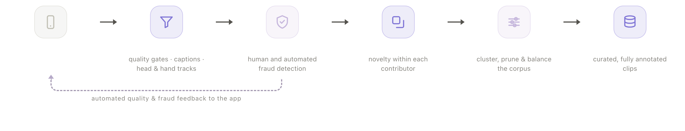

Executive Summary
피규어AI가 8월 25일 Index를 공개했다. 자사 휴머노이드를 움직이는 AI인 Helix를 학습시킬 영상을 사람에게서 직접 사들이는 앱이다. 이유는 공개문 맨 앞에 적혀 있다. 범용 로봇을 키우는 데 필요한 데이터는 인터넷에 없고 현실 세계에서 와야 한다는 것이다. 회사는 데이터를 사 보기도 했지만 판매사가 요구 수준을 맞추지 못해 수집 경로를 직접 만들었다고 밝혔다.
공개 시점 수치는 앱 내려받기 26만 4,000건, 영상 1,600만 개, 108개국, 크리에이터 지급액 1,500만 달러다. 업로드 속도는 8월 말 초당 30분에서 9월 첫 주 초당 35분으로 올랐고, 하루로 환산하면 사람이 몸을 움직인 시간 5.7년어치가 들어온다. 정작 크리에이터가 분당 얼마를 받는지, 다섯 단계 검수를 지나 실제 학습에 들어가는 영상이 몇 분의 몇인지는 회사 자료 어디에도 없다.
1·2·4절은 피규어의 공개문과 Index 페이지, 개인정보 처리방침에 적힌 것만 따라간다. 3절과 5절 뒷부분은 이 발표를 데이터 조달 문제로 옮겨 읽은 이 글의 해석이다.
주요 수치
출처: Figure, Introducing Index(2026-08-25) 및 Index 페이지, Humanoids Daily(2026-09-08)
1,600만 개
업로드된 영상
108개국에서 모였다. 피규어가 8월 25일 공개한 값이고 9월 13일 현재 Index 페이지에도 같은 숫자가 걸려 있다
초당 35분
업로드 속도
9월 4일로 끝나는 주 기준. 하루 5.7년어치다. 8월 말 공개 당시에는 초당 30분, 하루 4.9년어치였다
1,500만 달러
크리에이터에게 나간 누적 금액
앞으로 12개월 동안 데이터와 컴퓨트에 10억 달러 넘게 쓰겠다고 했다. 분당 얼마인지는 밝히지 않았다
0건
공개된 검수 통과율
중복으로 버리는 단계와 받아들인 영상에만 붙이는 주석 단계가 있는데, 걸러지는 비율은 어느 자료에도 없다
인터넷에 없는 장면을 사람에게서 산다
언어모델은 이미 써 놓은 글을 긁어서 배웠다. 로봇이 배워야 하는 것은 빨래를 개고 그릇을 옮기고 손잡이를 비트는 동작인데, 그 장면은 웹에 쌓여 있지 않다. 피규어의 설명도 여기서 출발한다. 범용 로봇을 키우려면 지구의 모든 환경에서 물리를 표본으로 걷어 와야 하는데, 그런 표본은 웹에 없다.
회사도 같은 진단을 자기 처지로 바꿔 말한다. 9월 3일 컴퓨트 공급 계약을 알리는 글에서 피규어는 지금 Helix를 학습시키는 데 필요한 데이터와 연산에 주로 묶인 국면에 들어섰다고 적었다. 그 계약은 엔비디아 베라 루빈 플랫폼 기반 GPU를 최대 10만 장까지 쓰는 것으로, 2027년 하반기 텍사스 바스토에서 배치를 시작하고 초기 약정 35억 달러에 60억 달러 이상까지 늘릴 뜻을 담았다. 로봇을 더 잘 만드는 일보다 로봇을 가르칠 재료를 구하는 일이 앞에 놓였다는 말이다.
처음에는 데이터를 사려고 했다. 회사 설명으로는 판매사들이 Helix에 필요한 처리량과 다양성, 품질 기준을 맞추지 못했고, 그래서 넉 달 동안 조용히 앱을 만들어 8월 25일 Index라는 이름으로 내놨다. 구조는 양쪽으로 열려 있다. 크리에이터로 신청해 승인을 받으면 촬영 장비를 받아 자기 집이나 일터에서 하루를 찍고 분 단위로 돈을 받는다. 반대편에서는 집이나 사업장이 크리에이터를 불러 집안일과 잡무를 맡기고, 그 과정이 1인칭 영상으로 남는다. 다만 신청한다고 바로 찍을 수 있는 것은 아니다. 앱 설명은 수요가 매우 많다며 신청서를 받아 두고 차례가 오면 알리겠다고 적는다.
찍히는 대상은 요리·청소·빨래 같은 집안일부터 물류센터와 식당, 공장, 사무실의 일까지다. 공개문은 고양이 화장실 청소, 엔진 오일 갈기, 식당 테이블 치우기처럼 드문 작업까지 들어왔고 그런 다양성을 환영한다고 적었다. 마지막 문단의 문장 하나가 이 사업의 방향을 요약한다. Index는 로봇을 서비스로 부르는 일의 기초 공사이며, 오늘은 사람이 집에 와서 청소를 하지만 결국에는 로봇이 대신하게 된다는 것이다.

초당 35분이 들어온다
공개 시점의 규모는 앱 내려받기 26만 4,000건, 주간 활성 크리에이터 4만 4,000명, 영상 1,600만 개, 108개국이다. 업로드는 초당 30분씩 처리되고 있었고 하루로 치면 사람이 일한 시간 4.9년어치였다. 2주 뒤 나온 수치는 더 가파르다. 9월 4일로 끝나는 주의 주간 활성 이용자는 6만 9,943명이고 업로드 속도는 초당 35분, 하루 5.7년어치로 올라갔다. 5월 1일의 99명에서 넉 달 만에 이 자리까지 왔다.
피규어는 속도 못지않게 다양성을 앞세운다. 수집한 영상 1,000시간마다 서로 다른 과업 373종, 손을 댄 물건 1,146종, 환경 116종이 들어 있다는 계산을 내놨다. 크리에이터가 한 명 늘 때마다 처음 보는 집과 처음 보는 물건, 그 사람만의 일하는 방식이 따라 들어오고, 이런 긴 꼬리는 미리 정의해 두기가 거의 불가능하다는 설명이다. 데이터의 다양성을 사람의 수로 산다.
다만 이 영상이 무엇까지 담아내는지는 아직 확인된 바가 없다. 휴머노이드 데일리는 같은 기사 끝에서 이 데이터가 스마트폰으로 찍은 단안 영상이라고 적으며, 정밀한 조립에 필요한 힘의 세기나 촉각 정보까지 담아낼 수 있을지는 아직 열린 질문이라고 했다. 다만 피규어의 앱 설명은 승인된 크리에이터에게 촬영 장비를 보내 준다고 적어, 무엇으로 찍느냐부터 두 자료의 서술이 갈린다. 같은 기사는 사람을 모으는 일이 피규어의 병목은 아닌 것으로 보인다는 말로 끝맺는다.
분당 단가와 통과율은 비어 있다
여기부터는 피규어가 주장한 바가 아니라 공개 자료를 데이터 조달 문제로 읽은 이 글의 해석이다. 공개된 숫자와 공개되지 않은 숫자를 갈라 보면 빈칸이 두 개 남는다.
하나는 값이다. Index 페이지도, 앱 소개도, 공개문도 모두 분 단위로 돈을 받는다고만 적는다. 분당 얼마인지는 어디에도 없다. 지급 총액 1,500만 달러를 영상 1,600만 개로 나누면 한 개당 1달러에 못 미치지만, 이 나눗셈은 단가가 아니다. 지급 기준이 영상 개수가 아니라 촬영 시간이고 영상 길이도 제각각이며, 분모에 들어간 1,600만 개에는 검수에서 떨어진 영상까지 섞여 있다. 크리에이터 쪽에서 보면 한 시간을 찍었을 때 얼마가 들어오는지를 시작 전에 계산할 방법이 없다는 뜻이다.
단가가 아예 없는 것은 아니고, 볼 수 있는 곳이 앱 안이다. 앱스토어 설명은 심사를 기다리는 동안 과업 목록을 둘러보고 무료 서비스를 미리 보고 크리에이터 수익이 어떻게 계산되는지 확인해 보라고 적는다. 즉 값은 신청서를 내고 승인을 받은 사람에게만 열리는 화면에 있다. 이 일의 조건을 다른 긱 플랫폼과 견주려는 사람은 그 화면 앞에서 멈춘다.
다른 하나는 몫이다. 피규어는 파이프라인 다섯 단계를 꽤 자세히 적었다. 자동 필터가 기술·시각·의미 품질을 먼저 거르고, 사람 분석가가 그 필터를 피해 가려는 시도를 찾아 계정 단위로 표본을 들여다본다. 다양성을 지키려고 영상 조각마다 임베딩을 만들어 이미 받아들인 데이터와 유사도가 문턱을 넘으면 버린다. 남은 것은 과업 할당량과 임베딩 군집으로 다시 균형을 맞추고, 마지막에 남은 에피소드마다 계층적 텍스트 설명을 붙인다. 다섯 단계 가운데 버리는 단계가 셋인데, 정작 몇 %가 버려지고 몇 %가 학습에 들어가는지는 한 줄도 없다.

검수 결과가 아무 데도 가지 않는 것은 아니다. 공개문은 소비자 앱에 가까운 제약에 맞춰 데이터 기반 시설을 다시 지었다고 하면서, 24시간 가용성과 대규모 상시 연산과 함께 다음 촬영을 낫게 하는 실시간 피드백을 그 제약으로 들었다. 무엇을 고치라는 신호는 찍은 사람에게 실시간으로 돌아간다. 다만 그 신호를 전부 합친 수, 곧 들어온 것 중 얼마가 남았는지는 밖으로 나오지 않는다.
모은 뒤의 결과도 마찬가지다. 사람이 찍은 영상이 로봇의 행동으로 옮겨 간다는 결과를 피규어가 내놓은 적은 있다. 지난해 9월 Project Go-Big 발표에서 로봇 시연을 한 건도 쓰지 않고 사람의 1인칭 영상만으로 Helix에 어수선한 집 안을 말로 이동하는 법을 가르쳤다고 밝혔다. 그런데 Index가 모은 데이터가 모델을 어디까지 밀어 올렸는지는 아직 밖에 없다. 공개문은 내부에서 보고 있는 일반화 결과가 이 가설을 이미 입증하고 있으며 곧 자세히 공유하겠다고만 적었다. 모은 양을 보여 주는 수는 나왔고, 그 양이 무엇을 바꿨는지 보여 주는 수는 회사 안에 있다.
속도는 분자를 자랑하는 지표다. 학습에 실제로 쓰이는 데이터의 양은 속도에 통과율을 곱해야 나오는데, 곱해야 할 두 번째 수가 공개되지 않았다. 초당 35분이 초당 몇 분이 되어 모델에 닿는지 밖에서는 알 수 없고, 그 차이를 아는 쪽은 데이터를 받는 회사뿐이다.
촬영된 집, 그 안의 다른 사람들
Index로 들어오는 영상은 남의 집 거실과 부엌과 세탁실이다. 그런데 피규어가 공개해 둔 개인정보 처리방침은 회사 전체를 덮는 한 벌뿐이고, 최종 수정일이 2026년 1월 21일이다. Index가 문을 열기 일곱 달 전 문서다. 사이트 이용약관은 2023년 2월 1일에 멈춰 있다.
그 문서가 수집 항목으로 적어 둔 것 중 하나가 감각 데이터다. 원문은 "당신 또는 당신 환경의 사진, 영상, 녹음"이라고 적는다. 찍는 사람만이 아니라 그 사람이 있는 공간이 처음부터 수집 대상에 들어가 있다. 제3자 공개를 다루는 절에는 이런 문장이 있다. 적용되는 주법에 따라 이 공개 가운데 일부는 개인정보의 "판매"에 해당할 수 있다는 것이다. 같은 문서의 뒷부분은 맞춤형 광고 목적으로 개인정보를 판매하거나 공유하거나 처리하지 않으며 지난 12개월 동안에도 그런 적이 없다고 적는다.
두 문장을 함께 읽어야 한다. 광고 목적의 판매는 하지 않는다고 선을 그으면서, 서비스 제공자와 제휴사로 나가는 공개가 주법상 판매로 분류될 여지는 열어 둔 구조다. 처리방침이 집 안 영상을 상업적 구매자에게 팔 수 있도록 허용한다는 식의 더 센 설명이 2차 요약으로 돌아다니는데, 원문에서 확인되는 것은 여기까지다.
수집 항목 표를 한 줄씩 따라가면 감각 데이터의 자리는 오히려 좁다. 처리방침이 세운 여섯 범주 가운데 감각 데이터만 수집 목적에서 서비스 마케팅이 빠져 있고, 공개 상대로 적힌 것도 서비스 제공자 하나뿐이다. 프로필·접속 기록·위치 같은 다른 범주에는 광고 제휴사가 나란히 적혀 있다. 대신 같은 문서의 사업 양도 조항은 합병이나 인수, 파산으로 사업의 지배권이 넘어가면 수집한 개인정보 전부가 그 상대에게 옮겨 갈 수 있다고 적는다. 보관을 다루는 절이 예로 든 항목은 이름과 이메일, 문의 내용, 기기와 IP 기록이고 영상은 그 예에 없다. 얼마나 오래 두는지를 찾으려는 독자는 표에서 가장 무거운 항목만 예시 밖에 있다는 사실을 보게 된다.
정작 빈 곳은 다른 자리다. 촬영자 본인은 신청서를 쓰고 장비를 받았지만, 그 집에 함께 사는 가족과 그날 방문한 사람은 아무 데도 서명하지 않았다. 처리방침에는 영상에 함께 찍힌 사람을 어떻게 다루는지에 관한 조항이 없다. 앱스토어 연령 등급은 17세 이상으로 걸려 있고, 이것은 앱을 쓰는 사람의 나이지 화면에 찍히는 사람의 나이가 아니다.
아동 조항을 보면 그 어긋남이 더 또렷하다. 처리방침은 18세 미만 아동에게서 개인정보를 알면서 수집하거나 요청하지 않는다고 적고, 18세 미만이라면 서비스에 가입하거나 개인정보를 보내지 말라고 당부한다. 문장이 상정한 아이는 스스로 가입 화면 앞에 앉은 아이다. 집안일을 찍는 영상에서 아이는 정보를 보내는 쪽이 아니라 부엌 뒤편에 담기는 쪽이고, 가입하지 말라는 당부는 그 자리에 닿지 않는다. 가정에서 사람 시점 영상을 모으는 일 자체는 Index가 처음도 아니다. 피규어는 지난해 9월 Project Go-Big을 발표하면서 브룩필드가 가진 주거 10만여 세대의 협조로 사람의 행동 영상을 모으고 있다고 밝혔고, 그 영상을 사람들이 평소 행동을 하는 동안 수동적으로 모았다고 적었다.
국내는 가정이 아니라 공장에서 모은다
같은 병목을 국내는 다른 무대에서 푼다. 과학기술정보통신부는 피지컬 AI 학습 데이터를 모을 데이터 트레이닝센터를 짓기로 하고 예산 확보에 들어갔다. 한국경제가 6월 25일 전한 계획은 이원 구조다. 서울 등 중앙 거점이 로봇 구동에 필요한 기본 행동 데이터와 합성데이터를 생산·가공하고, 전북·경남 등 지역 인공지능 전환 거점이 제조·농업·물류·서비스 현장에서 데이터를 모은다. 수집 단위도 구체적이다. 과일 따기처럼 손 뻗기, 잡기, 비틀기, 당기기로 쪼갤 수 있는 단위 동작을 먼저 모아 로봇 학습의 기초 데이터로 삼는다. 그 밑에는 경남·전북의 피지컬 AI 기반 인공지능 전환 연구개발 사업이 깔려 있고, 2030년까지 경남 6,763억 원과 전북 7,368억 원을 합쳐 1조 4,131억 원이 들어간다.
무엇부터 모을지를 가르는 기준도 같은 기사에 적혀 있다. 중소기업 현장과 지역 실증 사업, 스타트업이 이미 가진 데이터를 활용해 민감도가 낮은 기본 행동 데이터부터 모으고, 모자라는 부분은 합성데이터로 메운다는 계획이다. 합성데이터는 실제로 찍은 데이터를 놓고 조명과 각도, 물체 위치, 작업 환경을 바꿔 가상 학습 데이터를 대량으로 만드는 기술이다. 피규어가 사람 수를 늘려 사들인 다양성을, 국내 계획은 한 벌의 데이터를 변형해 얻는 쪽으로도 채우려 한다.
모으는 방식만 갈리는 것이 아니라 여는 방식도 갈린다. 같은 기사가 든 예로 구글 딥마인드와 미국 스탠퍼드대 등이 만든 오픈 X-엠바디먼트에는 여러 형태의 로봇에서 모은 실제 궤적 100만 개 이상이 공용 데이터셋으로 풀려 있다. 피규어가 만든 것은 반대쪽이다. 공개문이 스스로 적었듯 피규어 전용 파이프라인이고, 그래서 통과율도 단가도 그 안에서만 계산된다.
무대가 공장과 물류센터와 농장이라 4절에서 본 문제는 확실히 가볍다. 남의 집 거실에 카메라가 들어가지 않고, 촬영 동의를 받을 상대도 사업장 단위로 정리된다. 대신 같은 질문이 그대로 남는다. 현장에서 모은 동작 데이터 가운데 학습에 쓸 만한 몫을 어떤 기준으로 가르는지, 그 기준과 통과율을 사업 성과로 함께 내놓을 것인지다. 국가 사업은 투입 예산과 수집량을 먼저 발표하기 쉬운 구조이고, 그 두 숫자는 피규어가 발표한 것과 성격이 같다.
페블러스가 이 발표를 계속 들여다보는 이유도 여기에 있다. 데이터 사업의 성과는 대개 모은 양으로 보고되고, 그 양 가운데 쓸 수 있는 몫은 내부에만 남는다. 수집 속도는 발표하기 쉽고 통과율은 발표하기 어렵다. 어려운 쪽이 공개되지 않는 동안 밖에서는 경쟁의 순위를 매길 수 없고, 안에서도 어느 수집 설계가 나았는지 비교할 근거가 쌓이지 않는다.
데이터를 모으는 조직이라면 남의 발표를 읽을 때 다음 세 가지를 자기 것으로 바꿔 물어볼 만하다.
- 우리가 지난 분기에 모은 데이터 중 실제 학습에 들어간 비율을 지금 한 숫자로 말할 수 있는가.
- 걸러 낸 데이터가 왜 걸러졌는지 단계별로 남아 있는가, 아니면 버려진 뒤 사라지는가.
- 촬영·수집에 동의한 사람과 그 자리에 함께 있던 사람을 우리 동의 설계가 구분하고 있는가.
여기까지 읽어 주셔서 감사하다. 이 글의 수치와 인용은 피규어의 Index 공개문과 Index 페이지, 개인정보 처리방침, 엔스케일 계약 공개문에서 직접 확인했고, 9월 수치는 Humanoids Daily, 국내 계획은 한국경제 보도에서 대조했다. 수집한 데이터의 학습 채택률을 재고 있는 조직이 있다면 어떤 기준으로 가르는지 나눠 주시면 좋겠다.
(주)페블러스 데이터 커뮤니케이션팀
2026년 9월 13일
참고문헌
Figure AI 공식 자료
- 1.Figure AI. (2026). "Introducing Index." 2026-08-25.
- 2.Figure AI. "Index."
- 3.Figure AI. (2026). "Privacy Policy." 2026-01-21.
- 4.Figure AI. (2026). "Figure and Nscale Sign Strategic Partnership." 2026-09-03.
언론 보도
- 5.Humanoids Daily. (2026). "Figure AI Reports Rapid Growth for Index, Surpassing 69,000 Weekly Active Users." 2026-09-08.
- 6.한국경제. (2026). "피지컬 AI 데이터 모을 로봇 훈련소 만든다." 2026-06-25.